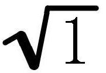

致卡尔·考茨基
苏黎世
1884年4月11日于伦敦
亲爱的考茨基：
你和爱德的信收到了。关于摩尔根的书FN1，希望在下星期能写好；现在我无法做很多工作，肖莱马和穆尔在这里。在一段时间里，这是我最后一本著作，要把内容如此丰富、但写得如此糟糕的书FN2概括起来，可不是闹着玩儿的事。如果杜西能把信找到，书中还将包括马克思对理查·瓦格纳的批评；这里有何联系，请您自己去想吧。146
这以后我将立即转入第二卷的工作，此外还要：（1）校订你们的《贫困》81；（2）为该书法文版120加注写序124；（3）校订英译稿FN3，该书现在必须加劲赶出来；（4）现在还有《杜林》以及法国方面还可能送来校阅的东西。
法比安总是跟我过不去147，他要是知道他这样干使我们在这里发笑，就不会干了。几年前，他打算和另一位了不起的思想家FN4一起，根据一个仓促拼凑起来的哲学纲领（内容是被曲解的和变质的第四代的康德主义）出版一种杂志，我们本来要为这个杂志撰稿的。后来，他攻击我对数学的辩证解释，并且告到马克思那里，说我污蔑了

。现在，这段历史又重演了。让他和冯·德尔·马尔克携手漫游世界吧，我是不准备看他的东西了。关于《工人阶级状况》。我从李卜克内西那里得到有关此书的最新消息：按弗莱塔格的说法，我仍然受同维干德订的合同的约束。但是李卜克内西说的全不可信，实际上他什么也没有做。我要亲自写信给弗莱塔格，这是唯一的办法。FN5
不管盖泽尔如何骂无神论者，俾斯麦还是不会让他满意——不会废除反社会党人法23。以前在这方面还抱有幻想的人，在俾斯麦为了挽救这一条法令，动用了他最后的后备力量——列曼这头老驴148之后，大概会丢掉这些幻想了。
党团禁止李卜克内西为报纸FN6撰稿，这妙极了。这比旧普鲁士书报检查更干脆。如果李卜克内西屈从这一禁令，说明情况很严重了。
洛贝尔图斯的材料FN7等等已收到，十分感谢，下周即寄还。你说的《资本论》中的那条注释，见第二版第552页149，在第三版中，我又作了大量的补充，请看一下。
写到这里，你该满足了，因为我还要给爱德写信。
你的 弗·恩·
脚 注
FN1 弗·恩格斯《家庭、私有制和国家的起源》。——编者注
FN2 路·亨·摩尔根《古代社会》。——编者注
FN3 《资本论》第一卷。——编者注
FN4 罗森堡。——编者注
FN5 见本卷第22页和第111―112页。——编者注
FN6 《柏林人民报》。——编者注
FN7 洛贝尔图斯《给德国工人协会委员会的公开信》。——编者注
注 释
23 反社会党人非常法 是俾斯麦政府在帝国国会多数的支持下于1878年10月21日通过的，其目的在于反对社会主义运动和工人运动。这个法令将德国社会民主党置于非法地位；党的一切组织、群众性的工人组织、社会主义的和工人的报刊都被查禁，社会主义书刊被没收，社会民主党人遭到镇压。该法令的有效期每两三年延长一次。但是，社会民主党在马克思和恩格斯的积极帮助下战胜了自己队伍中的机会主义分子和极“左”分子，得以在非常法有效期间正确地把地下工作同利用合法机会结合起来，大大加强和扩大了自己在群众中的影响。在声势浩大的工人运动的压力下，非常法于1890年10月1日被废除。恩格斯对这一法令的评论，见《俾斯麦和德国工人党》一文（《马克思恩格斯全集》中文版第19卷第308―310页）。——第20、23、28、35、55、102、105、109、125、137、142、144、152、157、160、178、203、215、230、234、238、249、261、289、292、297、309、315、321、325、328、329、332、341、471、493、560、609、639、650、656页。
81 指的是把马克思用法文写的1847年在布鲁塞尔和巴黎出版的《哲学的贫困。答蒲鲁东先生的〈贫困的哲学〉》一书译成德文一事。最初是爱·伯恩施坦翻译，后来卡·考茨基也参加了。恩格斯校订了译文，专门给这个版本写了序言，并加了许多注释。该书由狄茨出版社于1885年1月下半月在斯图加特出版。——第73、80、99、136、138、147、150、166、191、202、205、207、211、212、282页。
120 指马克思的女儿劳拉·拉法格当时正在准备出版的马克思的著作《哲学的贫困》法文第二版。但是这一版的准备工作拖延了，只是到恩格斯逝世以后，在1896年才在巴黎出版。——第106、110、114、121、126、136页。
124 恩格斯没有为《哲学的贫困》法文第二版专门写序言，劳·拉法格把恩格斯给1885年在斯图加特出版的这部著作德文第一版写的序言用作该版的序言。——第110、114、136页。
146 马克思的这封信没有找到。恩格斯在他的著作《家庭、私有制和国家的起源》的第二章里引用了马克思对理·瓦格纳的批评（见《马克思恩格斯全集》中文版第21卷第48页）。——第136页。
147 1884年4月，侨居美国的德国社会党人亨·威·法比安在《自由思想者》（《Freidenker》）上发表了一篇反对马克思和恩格斯的国家学说的文章。
1880年10月11日法比安请马克思和恩格斯为他打算从1881年1月1日起在美国的一个城市里出版的一个杂志撰稿，该杂志的纲领是他和威·路·罗森堡共同拟定的。
关于√-1问题，法比安曾于1880年11月6日写信给马克思。恩格斯在《反杜林论》第一编第十二章中提到了这个问题（见《马克思恩格斯全集》中文版第20卷第133―134页）。——第136、321页。
148 1884年3月22日，德国皇帝威廉一世在接见向他祝寿的联邦会议、德意志帝国国会和普鲁士议会的代表团时说，他不理解，为什么帝国国会否决了（在一读时）关于延长反社会党人法的法案。皇帝明确表示，他将把反对这个法令看做是反对他本人。——第137、160页。
149 见《马克思恩格斯全集》中文版第23卷第581页。——第137页。